例题 1
例 1 已知斜三棱柱 的底面是正三角形,侧棱 ,并且与底面所成角是 . 设侧棱长为 .
(1)求此三棱柱的高；
(2)求证:侧面 是矩形；
(3)求证: 在平面 上的射影 在 的平分线上.
学生阅读版 / 沪教版高中数学
必修第三册
第11章简单几何体 · 保留教材主线与原题
教材与正式教参整合
必修课程第 10 章讨论了空间中点、线及面的位置关系和一些性质. 在此基础上, 本章将讨论柱体、锥体及球体等常见的空间几何体的形状、性质和度量.
对简单几何体的研究有许多实际的应用. 从粉墙黛瓦的传统民居到高耸入云的摩天大楼, 各式建筑虽然千姿百态, 但它们往往都是由简单几何体组合而成的. 因此, 简单几何体的研究自古以来就是数学的重要内容, 《九章算术》中的“堑堵”“阳马”“鳖臑”等几何体就是一些特殊的柱体和锥体.
日常生活中，长方体粉笔盒、六角螺帽、易拉罐、电池等都是我们常见的柱体模型.
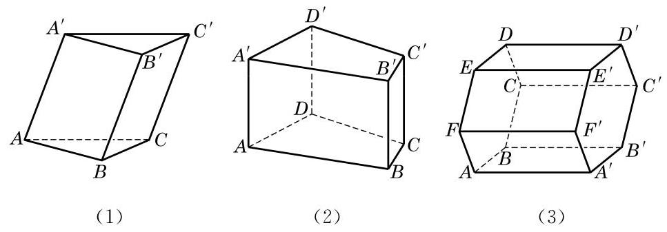
图 11-1-1
通常又可按照棱柱底面的多边形的边数把棱柱分为三棱柱、 四棱柱、五棱柱等. 例如, 图 11-1-1 中, (1)是三棱柱, 又因为它的侧棱不垂直于底面，所以是斜三棱柱；(2)是四棱柱，又因为侧棱垂直于底面, 所以是直四棱柱; (3)的底面是正六边形, 侧棱又垂直于底面, 所以是正六棱柱.
棱柱常用表示两底面多边形的记号(顶点相应排列)再用短横连接来记. 例如, 图 11-1-1 中, 三棱柱 (1) 可记为棱柱 ,六棱柱 (3) 可记为棱柱 .
例 1 已知斜三棱柱 的底面是正三角形,侧棱 ,并且与底面所成角是 . 设侧棱长为 .
(1)求此三棱柱的高；
(2)求证:侧面 是矩形；
(3)求证: 在平面 上的射影 在 的平分线上.
例 2 证明: (1) 过圆柱的轴的任意平面与圆柱形成的截面都是全等的矩形;
(2)任一平行于圆柱底面的平面与圆柱形成的截面都是与底面全等的圆.
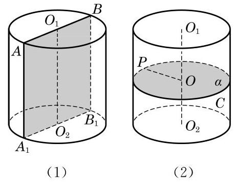
图 11-1-4
我们已经知道长方体的体积等于长、宽、高的乘积. 对于一般的柱体, 是否也可以给出相应的体积公式呢?
早在公元 5 世纪，我国数学家祖暅在求球体积时，就创造性地提出了一个原理: “幂势既同，则积不容异. ”这里，“幂”是截面积, “势”是几何体的高. 意思是两个同高的几何体, 若在任意给定的等高处的截面积相等, 则体积相等. 如图 11-1-5, 这个原理可以用现代的数学语言表示如下:
祖暅原理 夹在两个平行平面间的两个几何体, 如果被平行于这两个平面的任意平面截得的两个截面都有相等的面积, 那么这两个几何体的体积必相等.
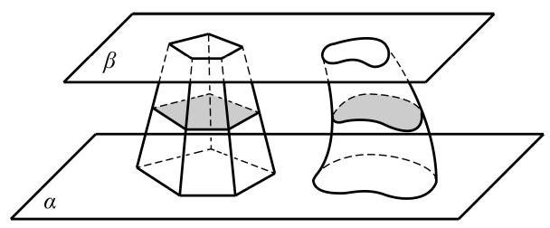
图 11-1-5
我们可以把图 11-1-5 看成装满水的两个不同容器. 若在任意给定的等高处液面面积相等, 则容器中的水一样多. 我们还可以用下面的方法直观地解释祖暅原理:如图 11-1-6，取一堆书放在桌面上, 将这堆书如图那样改变一下形状, 这时书堆的高度没有改变, 每页的面积也没有改变, 这堆书的体积与变形前相等.
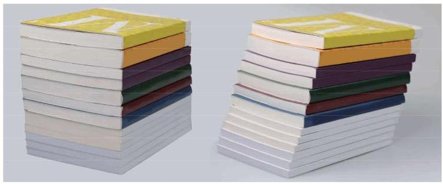
图 11-1-6
有了祖暅原理，下面就可以方便地推导一般柱体的体积. 设某个棱柱的底面积是 ,高是 . 为了计算它的体积,我们先构造一个底面积为 ,高为 的长方体,然后把棱柱和长方体同时置于两个平行平面之间, 如图11-1-7所示.
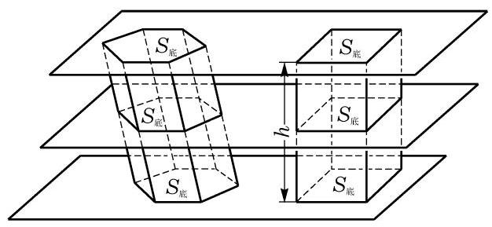
图 11-1-7
其中, 为棱柱的底面积, 为棱柱的高.
其中, 为圆柱的底面积, 为圆柱的高, 为圆柱的底面半径.
例 3 已知三棱柱的底面三角形 的三边长分别是 ,侧棱 ,且侧棱 与底面所成的角为 . 求这个三棱柱的体积.
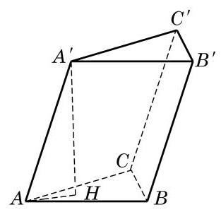
图 11-1-8
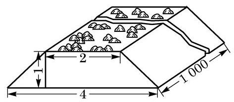
(第 1 题)
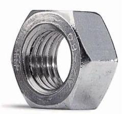
(第 3 题)
为了计算方便, 下面我们只讨论直棱柱和圆柱的表面积.
对于直棱柱, 由定义得每个侧面都是矩形, 且每个矩形的一边都等于棱柱的高, 另一边是底面多边形的一条边. 所以, 直棱柱的侧面积等于棱柱的高乘底面多边形的周长.
我们也可以用平面展开图的方法来求直棱柱的表面积. 如图 11-1-9, 将左边的直六棱柱沿其某条棱剪开, 并展开在一个平面上，可以得到右边的平面图形.
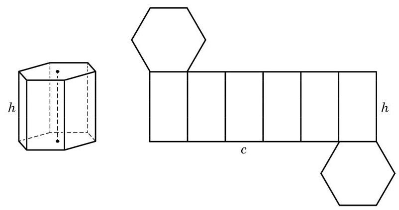
图 11-1-9
其中 为直棱柱的底面积.
其中, 为圆柱的底面积, 是圆柱底面的半径.
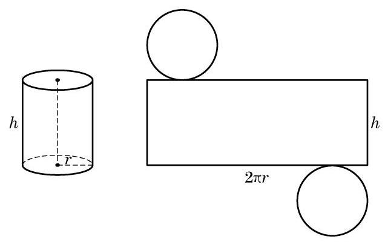
图 11-1-10
例 4 一张 A4 纸的规格为: ，把它作为一个圆柱的侧面. 求卷成的圆柱体体积. (结果精确到 )
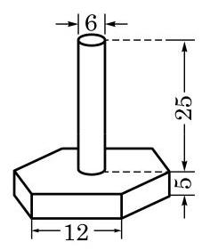
(第 1 题)
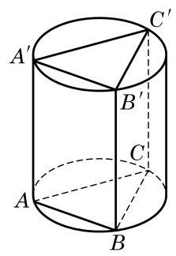
(第 2 题)
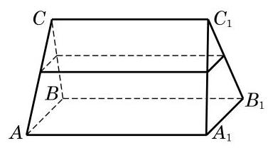
(第 3 题)